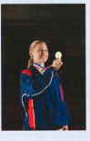
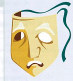

Hạnh phúc và nỗi buồn
Cực kỳ hạnh phúc
Có nhiều thành ngữ thân mật mang ý nghĩa là cực kỳ hạnh phúc.

Các thành ngữ khác về hạnh phúc
| thành ngữ | nghĩa | ví dụ |
|---|---|---|
| get a (real) kick out of something | rất thích làm một việc gì đó (thân mật) | Tôi get a (real) kick out of (rất thích) việc chạy bộ vào sáng sớm trước khi mọi người thức dậy. |
| do something for kicks | làm điều gì đó vì nó kích thích/thú vị, thường là việc nguy hiểm (thân mật) | Kate rất muốn thử trò nhảy bungee – just for kicks (chỉ để tìm cảm giác mạnh). |
| jump for joy | rất hạnh phúc và phấn khích về một điều gì đó đã xảy ra | Rowena đã jumped for joy (nhảy cẫng lên vì vui sướng) khi nghe tin mình giành giải nhất. |
| be floating/walking on air | rất hạnh phúc về một điều tốt đẹp vừa xảy ra | Tôi đã luôn walking on air (lâng lâng hạnh phúc) kể từ khi tôi và Chris bắt đầu hẹn hò. |
| something makes your day | điều gì đó khiến bạn cảm thấy rất hạnh phúc | Thật tuyệt khi nhận được tin từ bạn. Việc đó thực sự đã made my day (khiến tôi vô cùng hạnh phúc). |
Nỗi buồn
Louise thân mến,
Hy vọng mọi việc với cậu đều tốt đẹp. Không may là, mọi người ở đây đều out of sorts1 (hơi khó chịu/không được khỏe). Will đang down in the dumps2 (buồn bã) vì thằng bé không thích giáo viên của mình năm nay. Mình đã bảo với thằng bé rằng it's not the end of the world3 (đó chưa phải là tận thế) và thằng bé tốt hơn nên just grin and bear it4 (chấp nhận và chịu đựng nó), nhưng mình nghĩ thằng bé thích làm a misery guts5 (kẻ hay ca cẩm) nên tối nào cũng than phiền về cô giáo. Pat cũng đang bị sour grapes6 (ghen ăn tức ở) vì mình nhận được vai diễn trong vở kịch của trường mà cô ấy muốn. Điều này puts a damper on7 (làm mất vui) mọi bữa ăn, vì vậy mình thực sự rất mong được đến ở cùng cậu vào cuối tuần.
Thân yêu,
Amelia
